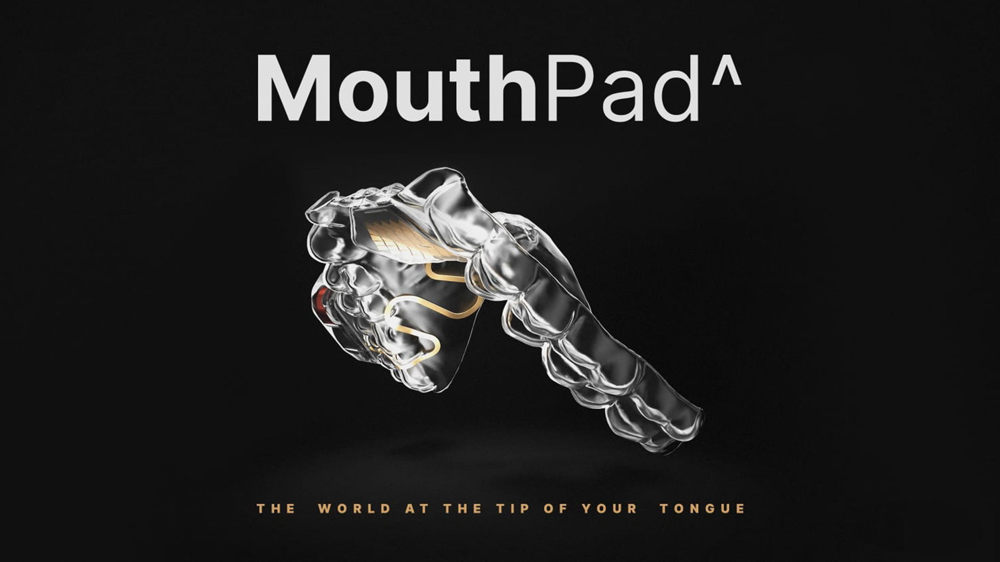
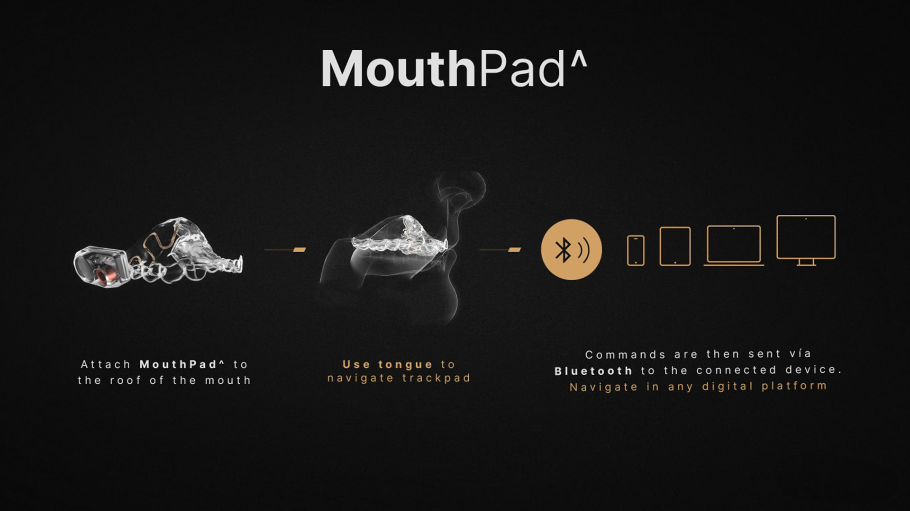
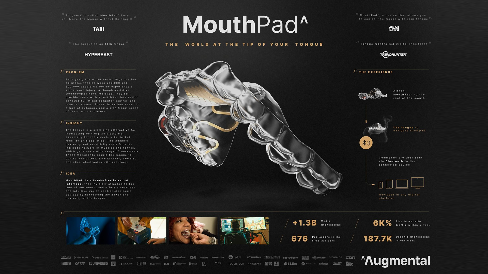

MouthPad^
Tongue-operated interface for digital freedom
Miguel Castro is a Creative & Research Director who creates at the intersection of human sensitivity and technological potential. Known for his reductionist approach and systems-level storytelling, he led MouthPad^ to win the Cannes Lions Grand Prix in Innovation. His work uncovers hidden systems, reframes interface logic, and makes dignity a design principle.



Glossary
- Intraoral Interface — A digital interface positioned inside the mouth.
- Latent Interface Space — Untapped anatomical or spatial domain for interaction.
- Biomimetic Prototypes — Designs modeled after biological functions.
- Spatial Strategy — Use of overlooked physical space as a foundation for interface logic.
- Embodied Interface — An interface that integrates with bodily movement and control.
- Systemic Inclusion — Accessibility designed into the full architecture of the product, not added on top.
- Assistive Technology — Devices or systems that enhance ability, access, and autonomy.
- Gesture Logic — Rule system interpreting physical actions (like tongue gestures) as digital input.
- Cultural Reprogramming — A shift in meaning and perception of what a device or category represents.
- Protagonist Design — A design philosophy that centers users as empowered agents in control.